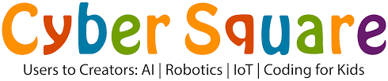

|  | HOME | ABOUT US | CONTACT US |
|---|
Cyber square is an innovative online platform that teaches kids to learn coding and thereby improving the 21st century skills. It is also an excellent way to teach mathematical and science concepts in a different way and have problem-solving skills, logic and patience.Cyber Square is a unique online learning platform for students and teachers that teaches Coding, Artificial Intelligence, Robotics, and the Internet of Things (IoT) at schools. The training, mentorship, and support can be extended to one-on-one sessions for the kids too. So, the parents who wish to provide their children with the fun learning courses that suit them can do that as well through our platform. We use the most engaging methods like games, puzzles, etc to educate kids about the latest technologies. Our vision is to educate the children about the latest & upcoming technologies so that they’re prepared for the changes that are going to happen in the near future. Our collaboration with schools that follow CBSE and British curriculum is to provide & support the schools with a well-structured, expert-designed curriculum to complement their Computer Subject curriculum. This also includes organizing regular digital fests, promoting coding clubs at the school, and preparing the students at times of national & international competitions, and more.